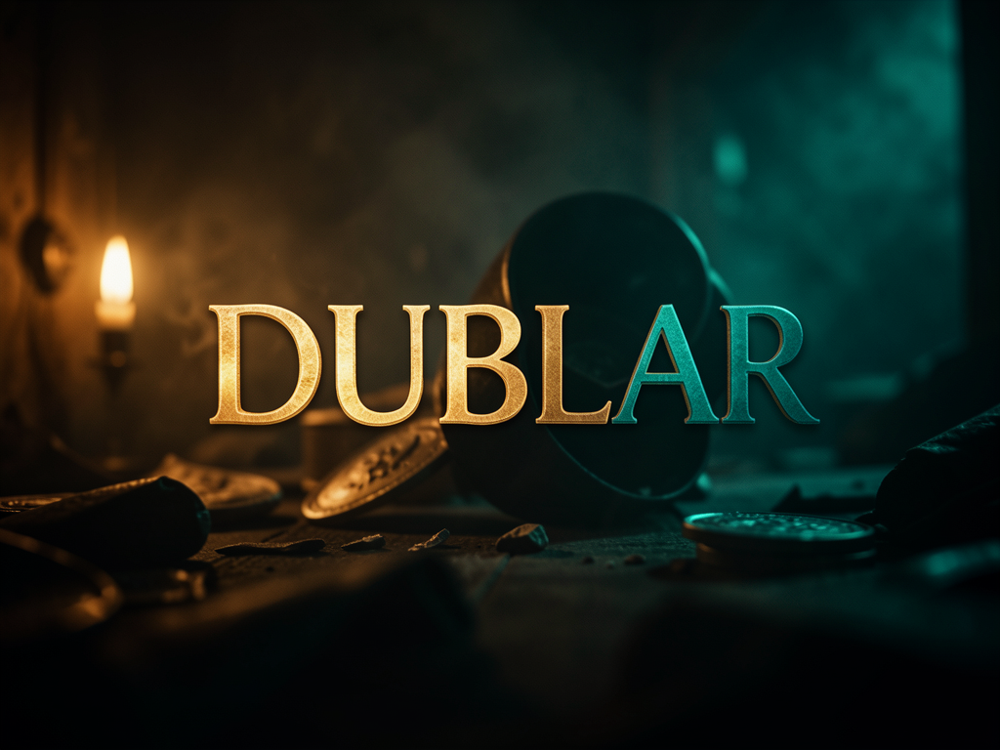

Transcreve com Whisper, traduz com M2M100 e sintetiza a voz com Bark ou Coqui TTS — tudo rodando na sua máquina, com sincronização inteligente pra encaixar a fala dublada no tempo do vídeo original.

O Dublar pega um vídeo em um idioma e devolve o mesmo vídeo dublado em outro, sem depender de serviço externo pago — só Python, FFmpeg e os modelos de IA baixados na primeira execução.
Usa faster-whisper pra transcrever o áudio original com timestamps, cobrindo mais de 90 idiomas de origem.
Traduz os segmentos com facebook/m2m100_418M, suportando 100 idiomas de destino.
Sintetiza a fala traduzida escolhendo entre Bark (multilíngue) ou Coqui TTS, com sincronização smart/fit/pad pra não desalinhar do vídeo.
Cada execução de dublar.py passa pelo mesmo pipeline, gravando os arquivos intermediários em dub_work/ e o resultado final em dublado/.
O Dublar roda 100% local — sem chaves de API. Só precisa do Python, FFmpeg e (opcionalmente) uma GPU NVIDIA pra acelerar.
Ambiente virtual dedicado, pra isolar as dependências de IA.
# criar e ativar venv
python3 -m venv venv
source venv/bin/activateObrigatório — sem ele nada funciona (extração de áudio e mixagem final).
# Ubuntu/Debian
sudo apt install ffmpegTorch (CPU por padrão) + libs do projeto listadas em requirements.txt.
# instalar deps
pip install torch --index-url https://download.pytorch.org/whl/cpu
pip install -r requirements.txtFluxo básico em Linux. Pra Windows, use instalar.bat e dublar.bat video.mp4 (veja o README do repo).
Baixe o código e entre na pasta do projeto.
git clone https://github.com/inematds/dublar.git # baixa o repo cd dublar
Ambiente virtual Python isolado, com Torch em versão CPU (troque pela build CUDA se tiver GPU NVIDIA — veja INSTALACAO_GPU.md).
python3 -m venv venv source venv/bin/activate pip install torch --index-url https://download.pytorch.org/whl/cpu pip install -r requirements.txt
O dublar.py é a versão estável — transcreve, traduz (inglês → português por padrão) e sintetiza a voz com Bark, usando sincronização smart.
python3 dublar.py video.mp4 --src_lang en --tgt_lang pt --tts bark --sync smart # gera dublado/video_dublado.mp4
Os parâmetros principais controlam idioma de origem/destino, engine TTS e como o áudio dublado se ajusta ao tempo do vídeo.
# espanhol -> inglês, engine coqui python3 dublar.py video.mp4 --src_lang es --tgt_lang en --tts coqui # voz específica do Bark python3 dublar.py video.mp4 --voice v2/pt_speaker_5
| Parâmetro | Padrão | Descrição |
|---|---|---|
| --src_lang | en | Idioma de origem (en, es, fr, pt, etc.) |
| --tgt_lang | pt | Idioma de destino |
| --tts | bark | Engine de voz (bark ou coqui) |
| --sync | smart | Sincronização (none, fit, pad, smart) |
| --voice | — | Voz específica (ex: v2/pt_speaker_5) |
| --rate | 22050 | Taxa de amostragem do áudio final |
O dublar_tech_v2.py tem um glossário de 100+ termos técnicos e preserva nomes de tecnologias em vez de traduzir (ex.: não traduz "React", "Docker").
python3 dublar_tech_v2.py codigo.mp4 --src_lang en --tgt_lang pt
O vídeo final fica em dublado/; os arquivos intermediários (transcrição, tradução, áudio segmentado, log completo) ficam em dub_work/ pra debug.
# log completo do processamento cat dub_work/logs.json # transcrição e tradução em legenda cat dub_work/asr.srt cat dub_work/asr_trad.srt
O projeto evoluiu como uma família de scripts, cada um adicionando um recurso sobre a versão base — sem quebrar as anteriores.